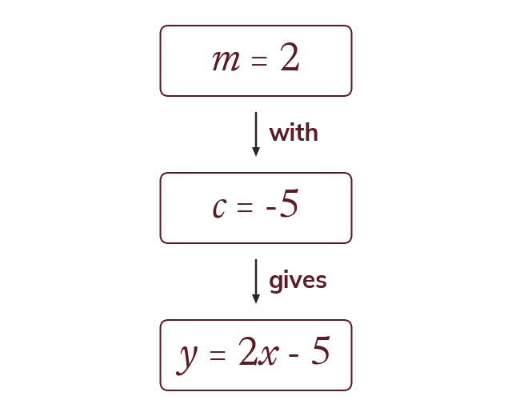

Two numbers are enough
A line is fixed by its gradient and its y-intercept. Build the equation from those two numbers, with no table of values.
An arithmetic sequence's rule is built directly from two facts about it, the common difference and the first term, and no term ever has to be listed. A straight line works the same way. Its gradient and its y-intercept determine it completely, so the equation can be assembled from those two numbers alone. A table of values is one way of finding points on a line; it is not a step the equation requires, and reaching for it when both numbers are already known is work that the structure has already done.